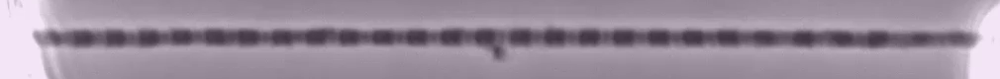
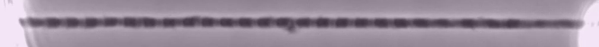
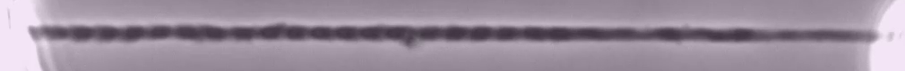
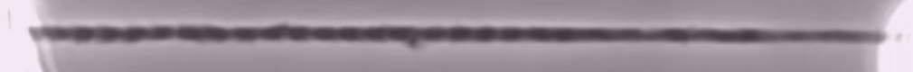
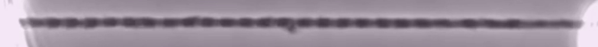
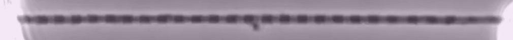

Observed motion · isolated rabbit skeletal myofibril
Striations change within a fixed length
These source observations show activation and deactivation of an isolated psoas myofibril under fixed-end conditions. Follow the repeated dark/light pattern: individual spacings need not change equally. The preparation is chemically activated; the movies do not show nerve stimulation or individual molecular power strokes.
Activation · source Video 1
The initial view pans to the striation band without cropping the media. Native/Fit restores full-frame context. Focus the video region to pan with arrows/Home/End. Controls report source-file seconds; playback rate changes presentation only.
Frame 0 · source-file PTS 0.000000 s

Frame 58 · source-file PTS 1.933333 s

Frame 115 · source-file PTS 3.833333 s

Spatial key: repeated dark/light profiles are the observed myofibril striation pattern. The myofibril is held between a glass-needle/motor support and reinforced nano-levers. Overall length stays near fixed while individual spacings can change non-uniformly. No new Z-disk, A/I-band, molecular, force-vector or metric-scale label is assigned to these frames.
- Compare frame 0 with frame 58: follow several neighboring striation intervals rather than assuming equal shortening.
- Compare frame 115 with the initial field; these are selected views within the separately published activation observation.
- The whole-frame source preserves support context. Individual molecular strokes and NMJ signaling are not visible.
Timing: 116 exported frames at 30 fps; source-file PTS 0 to 3.833333 s, stream duration about 3.8666 s including the final-frame dwell. The unchanged activation AAC track extends the container to 3.925313 s, so its browser denominator may read 3.93 s. The reviewed source does not specify an acquisition-interval or speed-conversion mapping for these clips; no biological clock is reconstructed.
Li, Leonard, Han, Moo & Herzog (2024), Gaining new understanding of sarcomere length non-uniformities in skeletal muscles, Video 1; CC BY 4.0, ©2024 authors. Rabbit psoas isolated myofibrils, rigor-glycerol storage, experimental chamber 20°C, chemically activated at pCa4.0; not intact human nerve-driven contraction. Complete unchanged 1920×1080 publication H.264 MP4; native browser codec support varies. Exact decoded-pixel strip (400,140)–(1410,220), 1010×80; no resampling/contrast change/added bar. At 170 mm print width, about 151 ppi. The two clips remain separate observations, not a matched continuous activation–relaxation cycle. Specimen, rights and clock record · Reproduction/hashes.
Deactivation · source Video 2
The initial view pans to the striation band without cropping the media. Native/Fit restores full-frame context. Focus the video region to pan with arrows/Home/End. Controls report source-file seconds; playback rate changes presentation only.
Frame 0 · source-file PTS 0.000000 s

Frame 58 · source-file PTS 1.933333 s

Frame 115 · source-file PTS 3.833333 s

Spatial key: repeated dark/light profiles are the observed myofibril striation pattern. The myofibril is held between a glass-needle/motor support and reinforced nano-levers. Overall length stays near fixed while individual spacings can change non-uniformly. No new Z-disk, A/I-band, molecular, force-vector or metric-scale label is assigned to these frames.
- Compare frame 0 with frame 58: follow several neighboring striation intervals rather than assuming equal shortening.
- Compare frame 115 with the initial field; these are selected views within the separately published deactivation observation.
- The whole-frame source preserves support context. Individual molecular strokes and NMJ signaling are not visible.
Timing: 116 exported frames at 30 fps; source-file PTS 0 to 3.833333 s, stream duration about 3.8666 s including the final-frame dwell. The HEVC/AAC browser MP4 is a container-only remux of the original MOV; coded packet bytes and frame PTS are preserved. Its container duration rounds to 3.867 s. The reviewed source does not specify an acquisition-interval or speed-conversion mapping for these clips; no biological clock is reconstructed.
Li, Leonard, Han, Moo & Herzog (2024), Gaining new understanding of sarcomere length non-uniformities in skeletal muscles, Video 2; CC BY 4.0, ©2024 authors. Rabbit psoas isolated myofibrils, rigor-glycerol storage, experimental chamber 20°C, chemically activated at pCa4.0; not intact human nerve-driven contraction. Complete unchanged 1920×1080 publication HEVC MOV; native browser codec support varies. Exact decoded-pixel strip (400,140)–(1410,220), 1010×80; no resampling/contrast change/added bar. At 170 mm print width, about 151 ppi. The two clips remain separate observations, not a matched continuous activation–relaxation cycle. Specimen, rights and clock record · Reproduction/hashes.